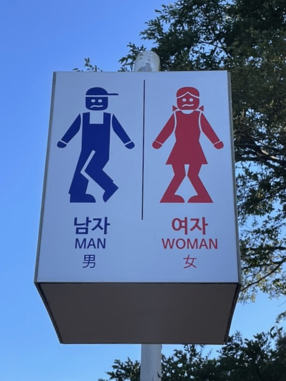
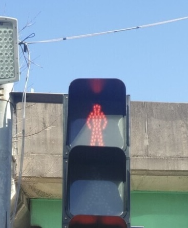
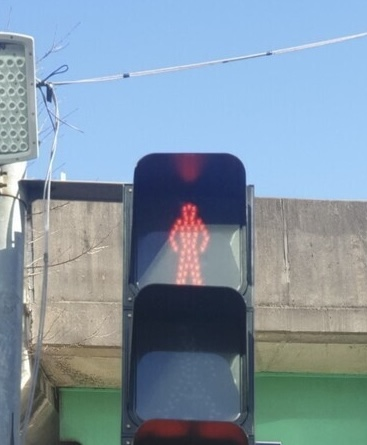
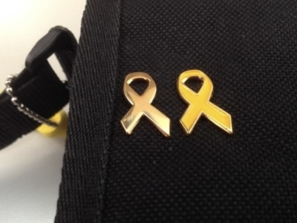
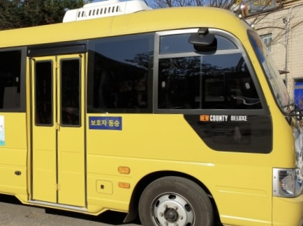
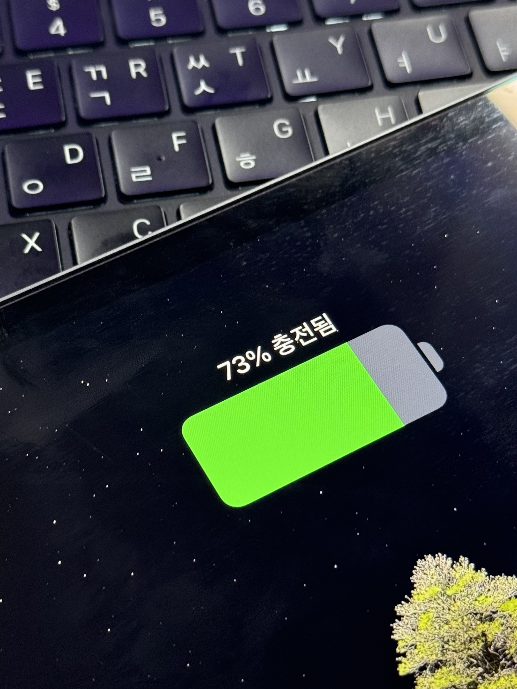
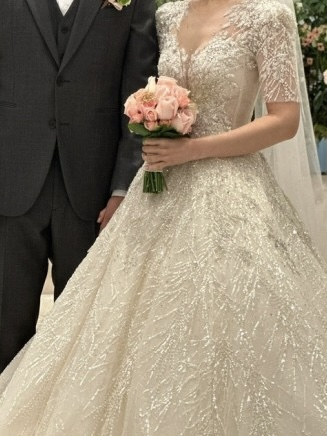

성별에 관한 색
1940년대 들어 미국에서 본격적으로 아이의 성별에 따른 색깔이 정해지기 시작했다. 선천적으로 남자는 파란색, 여자는 붉은색을 좋아하기 때문이라는 연구결과가 있다. 750쌍의 색상을 보여주면서 가능한 빨리 좋아하는 색을 선택하라고 요구했을 때, 피실험자들이 가장 선호했던 색은 파랑. 그러나 남자들이 순수한 파랑을 택한 반면, 여성들은 핑크빛이 감도는 자주색을 선호하는 것으로 나타났다. 애냐 허버트와 야즈 링은 성별에 따른 시신경의 차이로 선호하는 색이 다르기 때문이라고 결론내렸다.

색깔과 성별은 전혀 상관이 없다. 누구나 자신이 입고 싶은 색깔의 옷을 입을 수 있다. 하지만 아기 용품점, 여성복 매장, 남성용 매장에 가면 여성복은 대체적으로 핑크색이 많고, 남성복은 파란색이 많다. 아직까지 이런 성 고정관념이 존재한다는 뜻이다. 용품의 색부터 천천히 바꿔나간다면 고정관념에서 벗어날 수 있다.
색의 의미와 상징
빨간색
빨강은 최초의 색, 가장 오래된 색이다. 빨강의 상징성과 연상 작용의 특성으로는 색채 중에서 채도가 가장 높으며, 적극성과 공격적인 의미를 나타낸다.
 

눈에 잘 띄는 색상이므로 표지판에서 금지/정지/경고/위험 등의 표식으로 쓰이기도 한다. 축구같은 스포츠경기에서도 퇴장을 명령할 때 빨간 레드카드를 꺼낸다. 빨간색이 눈에 잘 띄는 색상은 맞지만 나는 다른 색을 사용하는 것이 더 옳다고 생각한다. 그 이유는 적녹색맹, 색약 등 특수한 색각 이상이 있기 때문이다. 하지만 이제서야 표지판의 의미를 변경한다면 혼돈이 올 수 있기 때문에 조심히 생각해 봐야 하는 부분이라고 생각한다.
노란색
감산 혼합의 원색 중 하나인 노랑은 RGB색공간에서는 녹색+빨강을 혼합한 색상이다. 명도가 높고, 배경이 검을 경우 눈에 잘 띄는 색이라 안전표지판 등에 많이 사용되는 색이다. 배경이 흰색이면 가독성이 떨어지므로 단독으로 사용할때는 보통 주황색을 섞은 골든옐로우색상을 사용하기도 한다. 계열색으로는 금색/개나리색/베이지색 등이 있다.

위안부 피해자 할머니를 의미하는 노란 나비, 그리고 노란 리본으로 추모의 의미로도 사용된다.

병아리에서 연상시켜 어린이들의 상징색으로도 널리 알려져있다. 유치원 통원버스/스쿨버스/학원차 등이 노란색으로 도색되어있다. 나는 스쿨버스가 노란색인 이유는 안전을 위해 밤에도 잘 보이기 위해서라고 생각했다.
초록색
초록색/녹색이라고 부르며 일반적으로 파란색, 빨간색과 더불어 빛의 삼원색의 하나로 불린다. RGB에서는 라임(LIME)또는 연두색이 파랑과 빨강의 영역에 대응되는 색이다. 계열색으로는 라임/올리브색/풀색/연두색/청록색 등이 있다. 초록색은 대체적으로 성장, 허가, 안정, 평화, 휴식 등을 나타내며 긍정적인 느낌을 주는 색 중 하나이다.

대표적으로 신호등에서 통행을 의미하는 초록불이 있으며, 전자 제품이나 기기를 사용할 때 녹색등을 정상 작동하는 것으로 표시하는 경우가 많다. 이렇게 너무 당연시 여겨왔던 것들을 하나하나 짚어보니까 신기하고 재미있다.
위장색으로 초록색의 계열색인 카키/국방색은 군인을 상징하는 색이기도 하다.
흰색
모든 빛을 반사하며 아무런 색이 없는 무채색이다. 무채색 중 가장 밝다. 빛의 3원색을 합치면 흰색이 된다. 계열색으로는 같은 무채색계열인 회색, 은색, 암회색, 검정 등이 있다.

대흰색 하면 떠오르는 것 중 하나가 순백색의 웨딩드레스이다. 순수함, 순결함, 고귀함을 상징하므로 대부분의 신부가 흰색 웨딩드레스를 입는다. 우리나라 또한 서양문물의 도입으로 흰색 웨딩드레스가 보편화 되어있다. 흰색의 상징 때문에 웨딩드레스가 흰색이라면 턱시도는 왜 검은색인지 궁금하다. 나는 결혼식이 너무 여성 쪽에만 치우쳐져 있다고 생각한다.
교황이나 의사, 약사 직업군도 백색 가운을 착용한다. 이것은 위생 또는 청결의 의미이기도 하다.